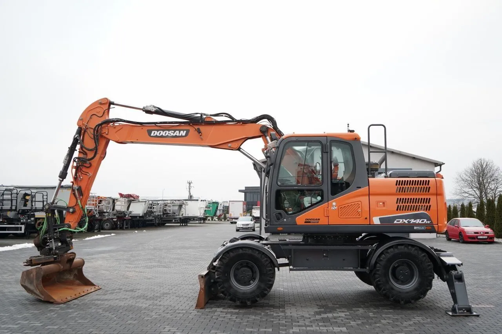
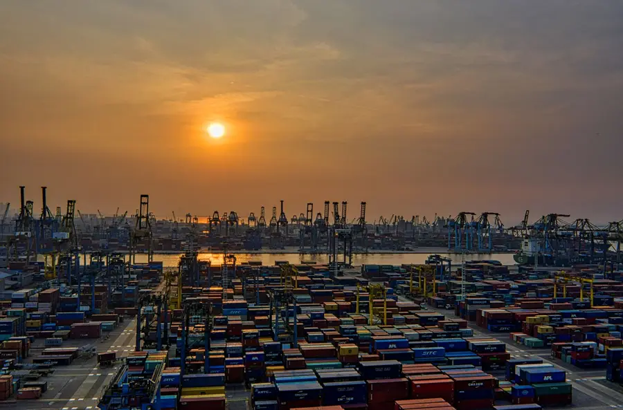

AGRIMAT TP, SAS au capital de 3 500 €
Siège social : 47 Boulevard de la Muette, 95140 Garges-lès-Gonesse, France
SIREN : 988 595 492 – SIRET : 988 595 492 00014
RCS Pontoise – TVA intracommunautaire : FR42988595492
Code APE : 4663Z
E-mail : agrimat.travauxpublic@gmail.com – Tél./WhatsApp : +33 7 59 93 44 54
M. Ali Mohammad, Président
GitHub, Inc. (service GitHub Pages) – 88 Colin P. Kelly Jr. Street, San Francisco, CA 94107, États-Unis – https://github.com
Photos d'illustration : elles montrent le type de machine recherché, pas forcément le modèle exact.
Engins TP, port et navire : Pexels (licence Pexels).
New Holland TX34 : Adam Loader, CC BY-SA 4.0 · Ford 7740 : AlfvanBeem, CC0 · New Holland TM 165 : Flominator, CC BY-SA 3.0 · Fiat 100-90 DT : Kahvilokki, CC BY-SA 4.0 — via Wikimedia Commons.
Les textes et éléments graphiques de ce site sont la propriété d'AGRIMAT TP. Les marques citées appartiennent à leurs propriétaires respectifs et sont mentionnées à titre indicatif.
Ce site ne collecte aucune donnée personnelle de manière automatique et n'utilise pas de cookies publicitaires. Les informations que vous saisissez dans le formulaire sont uniquement transmises via WhatsApp à AGRIMAT TP pour répondre à votre demande. Elles ne sont ni vendues ni cédées à des tiers.
Conformément au RGPD, vous pouvez demander l'accès, la rectification ou la suppression de vos données en écrivant à agrimat.travauxpublic@gmail.com.